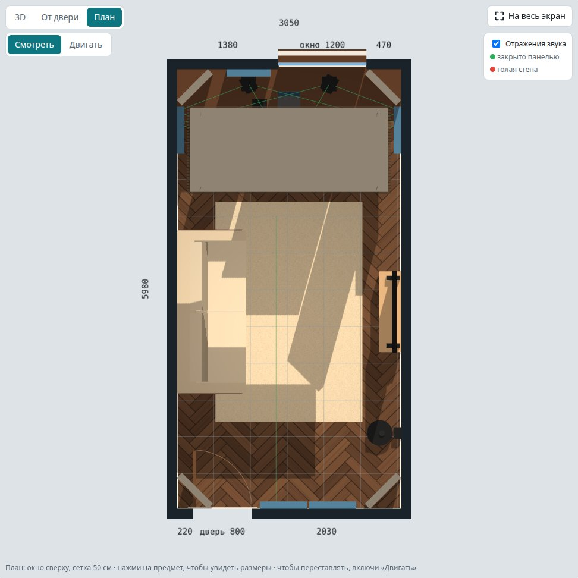
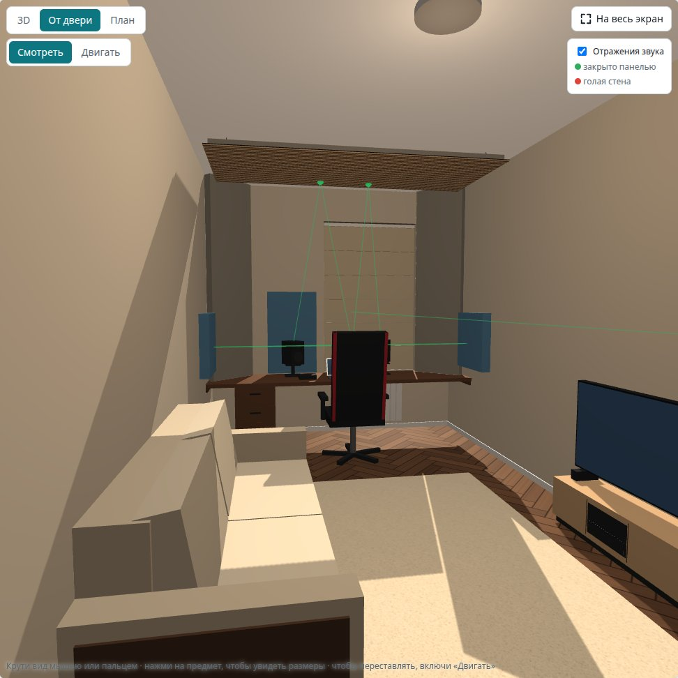
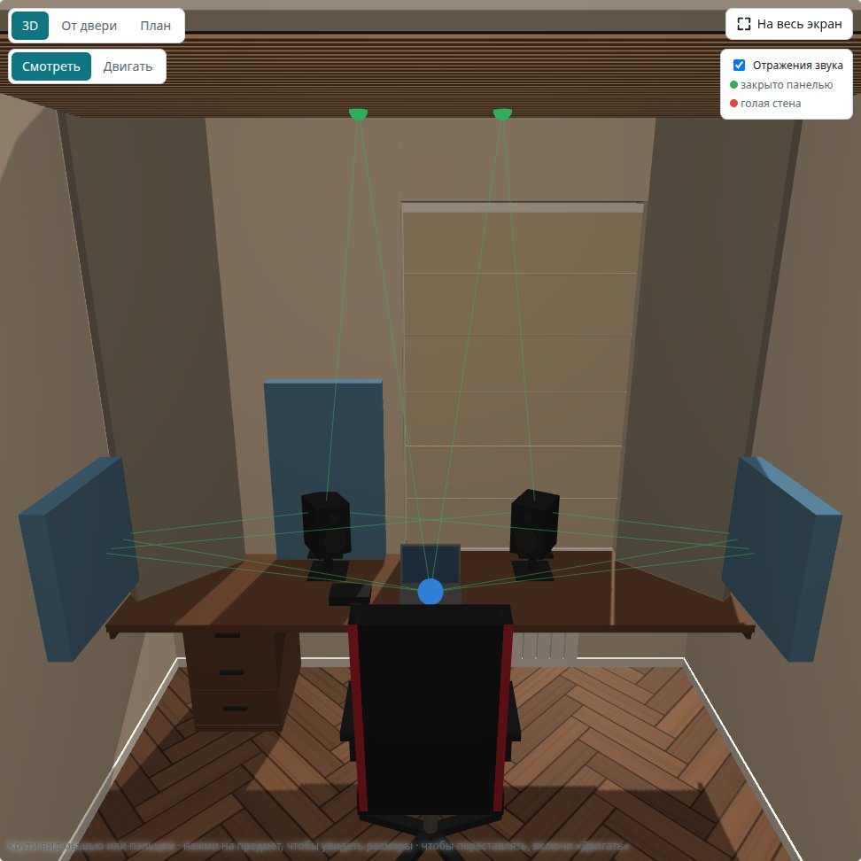
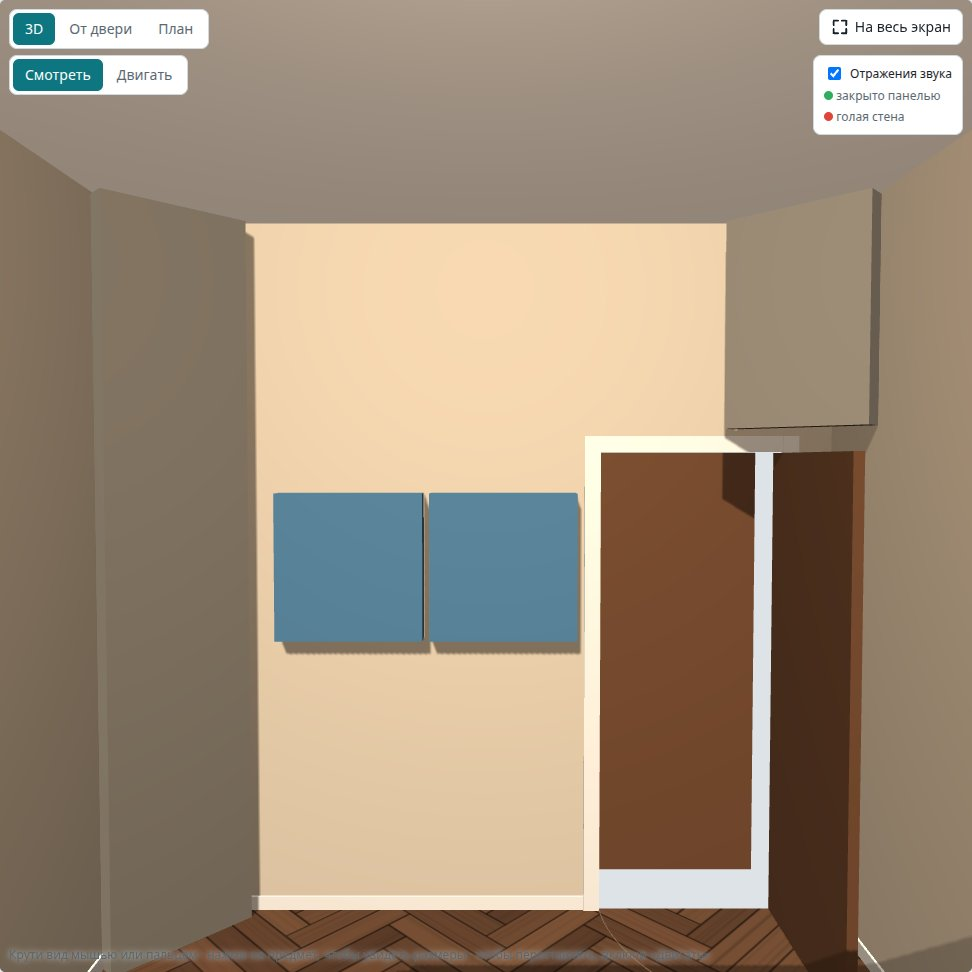
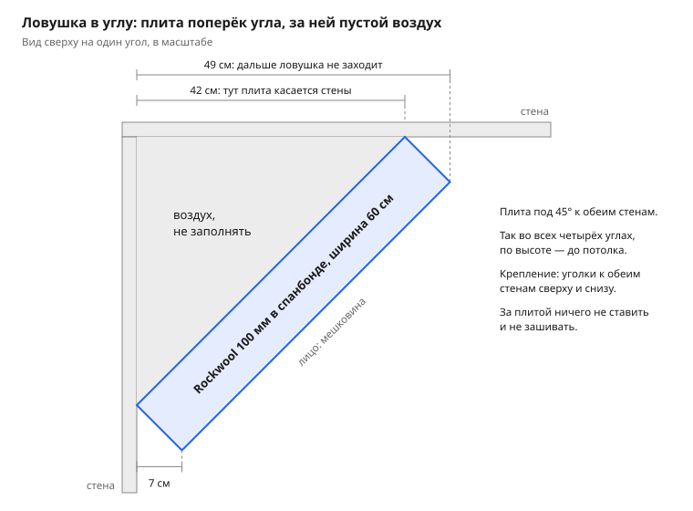
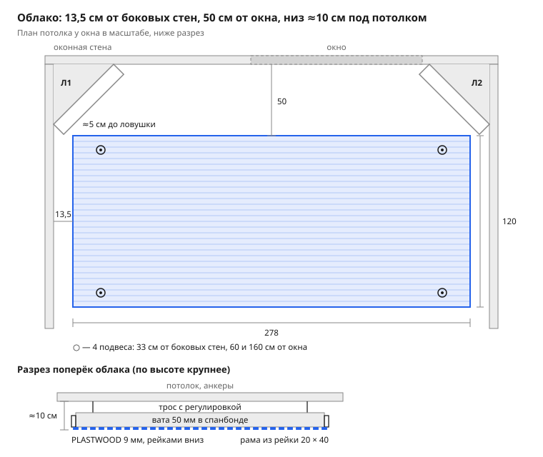

Монтаж акустики в студии: бриф для бригады
Монтируем акустику в комнате 5,98 × 3,05 м: 4 угловые ловушки, 5 панелей и облако под потолком на тросах. Основные материалы покупаю я, крепёж и расходники — ваши, назовите стоимость.
3D-модель комнаты: pure-berg.github.io/remont-studio. Для PDF: меню браузера → «Печать» → «Сохранить как PDF».
Комната и план
Комната 598 × 305 см, потолок ≈305 см. Лево и право — если стоять в дверях лицом к окну. Размеры со знаком ≈ взяты по фото или плану, их нужно уточнить на месте (см. «Что проверить на месте»).
| Что | Где | Размер, см |
|---|---|---|
| Окно (проём) | оконная стена, 138 от левой стены, 47 от правой | ≈120 × 190, низ ≈75 от пола |
| Дверь | стена с дверью, 22 от левой стены | 80 × 205, наличник ≈7 |
| Стол (делают мебельщики) | вдоль оконной стены, от левой стены до правой | столешница 305 × 70, верх на 75 от пола |
| Потолок | — | ≈305 |
Что монтируем:
| Позиция | Где |
|---|---|
| Ловушка 1 | левый угол у окна, стоит на столешнице |
| Ловушка 2 | правый угол у окна, стоит на столешнице |
| Ловушка 3 | правый угол у двери, от пола |
| Ловушка 4 | левый угол у двери, над дверью |
| 2 панели 64 × 64 | левая и правая стена, у стола |
| 2 панели 64 × 64 | стена с дверью, справа от двери |
| Панель 60 × 100 | оконная стена, над столом слева от окна |
| Облако 278 × 120 | под потолком над столом |
| Штора | в оконном проёме, выберу после замера |
Картинки из 3D-модели комнаты. Панели здесь синие, чтобы их было видно, ловушки серые, облако — рейка под потолком. Мебель и техника показаны для ориентира.








Угловые ловушки ×4
В каждом углу комнаты ставим вертикальную плиту базальтовой ваты шириной 60 и толщиной 10 см. Плита стоит поперёк угла под 45°, за ней остаётся пустой треугольник воздуха. Все четыре ловушки идут до потолка.
| Ловушка | Угол | Откуда до куда | Высота, см |
|---|---|---|---|
| 1 | левый у окна | от столешницы (75) до потолка | ≈230 |
| 2 | правый у окна | от столешницы (75) до потолка | ≈230 |
| 3 | правый у двери | от пола до потолка | ≈305 |
| 4 | левый у двери | над дверью: от ≈215 до потолка | ≈90 |
Размеры в плане, одинаковые для всех четырёх:
- задняя сторона плиты касается обеих стен в 42 см от угла;
- лицевая сторона уходит на 49 см от угла и отстоит от стены на 7 см;
- дальше 49 см от угла ловушка не заходит: там уже панели, облако и откос окна.

Требования. Конструкцию рамы выбираете вы, важно только такое:
- треугольник за плитой остаётся пустым, ничем его не забивать и не зашивать;
- лицо и тыл плиты открыты для звука: только спанбонд и ткань, без фанеры, плёнки и сплошных досок;
- вата закрыта спанбондом со всех сторон, чтобы волокна не летели в комнату;
- рама жёстко прикреплена к обеим стенам вверху и внизу и не дребезжит.
Сборка.
- Рама из рейки 20 × 40 шириной 60 см на высоту угла: две стойки и поперечины. Рейки по 1,5 м, стойки сращивать накладками из обрезков.
- В раму — плиты Rockwool 100 мм длинной стороной вертикально (раскрой ниже). Обернуть спанбондом, закрепить степлером.
- Лицевую сторону обтянуть мешковиной.
- Поставить поперёк угла по размерам 42 / 49, закрепить уголками к стенам.
Особенности по углам.
- Ловушки 1 и 2 ставятся на готовую столешницу, поэтому монтируются после мебельщиков. В столешницу не сверлить, крепить к стенам.
- Ловушка 2: по плану от проёма окна до правой стены 47 см. Ловушка касается стены в 5 см от проёма, а её лицевой край заходит на откос на 2 см. Если на месте меньше 45 см, перед монтажом напишите мне.
- Ловушка 3 стоит на полу, низ рамы на ножках или прокладке, чтобы не царапать паркет.
- Ловушка 4 висит над дверью: низ в 10 см над полотном (≈215 от пола, выше наличника). Нужна опора снизу: уголки или брусок на обеих стенах. Дверь должна открываться свободно, ничего из крепежа не ниже верха наличника.
Панели 64 × 64 ×4
Готовые панели 64 × 64 × 10 см, крепёж есть в комплекте каждой: 2 мебельных подвеса, 6 саморезов 40 мм, 2 дюбеля 6 мм. Вешать вплотную к стене. Положение задано краями панели, высоты — от чистого пола.
| Панель | Стена | По горизонтали, см | По высоте, см |
|---|---|---|---|
| П1 | левая | от 51 до 115 от оконной стены | от 88 до 152 |
| П2 | правая | от 51 до 115 от оконной стены | от 88 до 152 |
| П3 | с дверью | от 113 до 177 от левой стены | от 123 до 187 |
| П4 | с дверью | от 180 до 244 от левой стены (61 до правой) | от 123 до 187 |
- П1 и П2 висят друг напротив друга, на одной высоте. От окна их сдвинули специально, чтобы не упирались в ловушки 1 и 2: те занимают 49 см от угла.
- П3 и П4 висят рядом, между ними 3 см. От края П3 до проёма двери 11 см, до наличника ≈4 см. Если наличник шире, сдвиньте обе панели вправо: до ловушки 3 запас 12 см.
- Дюбель 6 мм из комплекта подходит под кирпич и бетон. Если стена другая (ГКЛ, штукатурка по дранке), подберите свой крепёж.
Панель 60 × 100 (самодельная)
Панель висит на оконной стене над столом, между левым углом и окном, длинной стороной вертикально.
- По горизонтали: от 68 до 128 см от левой стены. До проёма окна остаётся 10 см, до ловушки 1 — 19 см.
- По высоте: от 77 до 177 см от пола, то есть низ в 2 см над столешницей.
- Перед панелью на столе стоит монитор (колонка). Поэтому панель вешаем вплотную к стене, общая толщина вместе с тканью не больше 11 см.
Сборка. Как у ловушек, только меньше. Рама из рейки 20 × 40 на 60 × 100 см (≈3,2 м рейки), в ней одна целая плита Rockwool 100 мм (она как раз 1000 × 600). Плиту обернуть спанбондом, лицо обтянуть мешковиной. Повесить на два подвеса, чтобы панель можно было снять.
Облако на тросах
Облако 278 × 120 см висит горизонтально над столом, низ в ≈10 см под потолком (≈295 от пола). Вес ≈20–30 кг, это оценка: точный вес панелей PLASTWOOD не проверен.
Где висит.
- Длинная сторона (278) идёт поперёк комнаты, слева направо. До каждой боковой стены по 13,5 см.
- Короткая сторона (120): от 50 до 170 см от оконной стены.
- Ближе к окну не сдвигать. Ловушки 1 и 2 идут до потолка, и углы облака отстоят от них всего на ≈5 см.
- Рейки PLASTWOOD смотрят вниз, в комнату.

Сборка.
- Рама 278 × 120 из рейки 20 × 40 по периметру и 2–3 поперечины (≈10 м рейки). Длинные стороны сращивать накладками: рейка по 1,5 м.
- На раму снизу — две панели PLASTWOOD 2780 × 600 встык, лицом вниз. Саморезы — с тыльной стороны, чтобы их не было видно.
- Сверху, внутри рамы, — слой Rockwool 50 мм на всю площадь, ≈2,70 × 1,14 м (6 плит 1000 × 600). Обернуть спанбондом. Без этой ваты облако не работает: рейка 9 мм сама по себе почти ничего не глушит.
- Четыре точки подвеса на раме: в ≈19 см от коротких краёв и ≈10 см от длинных. На потолке это примерно 33 см от боковых стен и 60 / 160 см от оконной стены. Точное место вы можете сдвинуть под балки или проводку.
Подвес. 4 тросовых подвеса с регулировкой, каждый не менее 20 кг. Анкеры — по типу перекрытия, он пока неизвестен:
- бетон — анкер с кольцом или крюком;
- деревянные балки (в сталинках бывают) — только в балки. В штукатурку по дранке крепить нельзя.
Если подвесу нужно больше 10 см до потолка, опустить облако можно до ≈20 см под потолком, но сначала скажите мне.
Штора в проём
Штору блэкаут выберу сам после вашего замера, от бригады нужны только размеры. По плану и фото ниша ≈118 × 190 см, штора стоит внутри проёма. На стену над окном её вешать нельзя: мешает ловушка 2.
Что замерить (в сантиметрах, после установки столешницы):
- Ширина проёма между откосами — вверху, посередине и внизу. Нужны все три цифры.
- Высота от верхнего откоса до столешницы — слева и справа.
- Глубина ниши от плоскости стены до рамы и насколько выступают ручки окна.
- Какие створки открываются и как: поворотом, откидыванием или глухие. Размеры стекла каждой створки.
- Фото проёма целиком и верхнего откоса крупно.
Раскрой плит Rockwool
На ловушки и панель 60 × 100 уходит 10 плит 100 мм из 15, на облако — 6 плит 50 мм из 10. Плиты 1000 × 600, в ловушки ставятся длинной стороной вертикально, ширина 60 см идёт без резки. Высоты углов — по оценке потолка ≈305, на месте режьте по факту.
| Куда | Высота, см | Плиты 100 мм | Обрезки |
|---|---|---|---|
| Ловушка 1 | ≈230 | 2 целые + 30 см от третьей | остаётся кусок 70 см (А) |
| Ловушка 2 | ≈230 | 2 целые + 30 см от третьей | остаётся кусок 70 см (Б) |
| Ловушка 3 | ≈305 | 3 целые + 5 см из куска А | от А остаётся 65 см |
| Ловушка 4 | ≈90 | кусок Б (70) + 20 см из остатка А | от А остаётся 45 см |
| Панель 60 × 100 | 100 | 1 целая | — |
Итого 10 плит, 5 остаются в запас на подрезку и на случай, если потолок выше. Для облака шесть плит 50 мм ложатся в два ряда по три и подрезаются до ≈2,70 × 1,14 м по раме.
Порядок работ
Столешницу делают и ставят мебельщики, ловушки 1 и 2 стоят на ней. Поэтому сначала всё, что требует свободного пола у окна, потом стол, потом ловушки на нём.
- Замеры на месте и проверка перекрытия (список ниже). Цифры прислать мне до покупки подвесов и до резки ваты.
- Стены и потолок к этому моменту окрашены и сухие: всё навесное монтируется на чистовую отделку.
- Облако: анкеры, подвесы, сборка и подъём, пока у окна нет стола и есть место для стремянок.
- Мебельщики ставят столешницу 305 × 70 на высоте 75, от стены до стены, и тумбу. Их опорные бруски идут по левой, правой и оконной стене. В углах над столом свои крепления не ставить: там встанут ловушки.
- Ловушки 1 и 2 на столешницу, крепление к стенам.
- Ловушки 3 и 4 (её опора над дверью), панели 64 × 64, панель 60 × 100.
- Замер шторы в проём (раздел «Штора в проём»).
Если мебельщики приходят раньше облака, облако можно вешать и над готовым столом. Тогда столешницу нужно закрыть от пыли и не вставать на неё.
Что проверить на месте
Эти цифры в брифе приблизительные. Замерьте и пришлите мне до начала монтажа.
- Высота потолка в четырёх углах (в брифе ≈305). От неё зависят длина ловушек и раскрой ваты. Запаса плит хватает до ≈315.
- Тип перекрытия над столом: бетон или деревянные балки. Если балки — где они проходят. От этого зависят анкеры облака.
- Материал стен (кирпич, бетон, ГКЛ, штукатурка по дранке) и где идёт проводка.
- Окно: ширина проёма (≈120) и от правого края проёма до правой стены (по плану 47). Ловушке 2 нужно не меньше 45.
- Какая створка окна открывается поворотом. Правая на 90° упрётся в ловушку 2, откидыванию ловушка не мешает. Если правая поворотная — скажите мне до монтажа ловушки.
- Дверь: высота от пола до верха наличника (по плану ≈212) и ширина наличника справа. От них зависят низ ловушки 4 и место панели П3.
- Углы комнаты — прямые ли. Плита 60 см должна касаться обеих стен.
- Мешковина: приложите кусок ко рту и подуйте. Воздух должен проходить легко. Если тяжело, напишите мне, заменим ткань.
Материалы
Основные материалы закажу заранее и привезу к началу работ, дату согласуем. Крепёж и расходники покупаете вы. Назовите, пожалуйста, отдельно стоимость работы и стоимость своих материалов.
От меня
| Материал | Количество | На что |
|---|---|---|
| Rockwool Акустик Баттс 100 мм, плиты 1000 × 600 | 3 уп. = 15 плит | ловушки, панель 60 × 100 (нужно 10) |
| Rockwool Акустик Баттс 50 мм | 1 уп. = 10 плит | облако (нужно 6) |
| Рейка 20 × 40 × 1500 | 30 шт = 45 м | рамы (нужно ≈39 м) |
| Спанбонд 60 г/м² | рулон 3,2 × 10 м | обёртка ваты (нужно ≈20 м²) |
| Мешковина джутовая 420 г/м², ширина 110 см | 10 м | лицо ловушек и панели 60 × 100 (нужно ≈7 м²) |
| PLASTWOOD 2780 × 600 × 9 | 2 шт | облако |
| Акустические панели 64 × 64 × 10 с крепежом | 4 шт | П1–П4 |
Рейки в обрез — запас около одной штуки. Если не хватит, докупите и включите в счёт.
От вас (назовите стоимость)
- Саморезы по дереву для рам и накладок.
- Мебельные уголки и дюбели под стены: крепление четырёх ловушек сверху и снизу.
- Опора для ловушки 4 над дверью (уголки или брусок).
- Ножки или прокладка под ловушку 3 на паркете.
- Два подвеса для панели 60 × 100.
- Скобы для степлера.
- 4 тросовых подвеса с регулировкой, каждый не менее 20 кг, для облака.
- 4 анкера под перекрытие, после проверки потолка.
- Инструмент ваш.
При работе с ватой нужны респиратор, очки и перчатки. Комнату после резки пропылесосить.